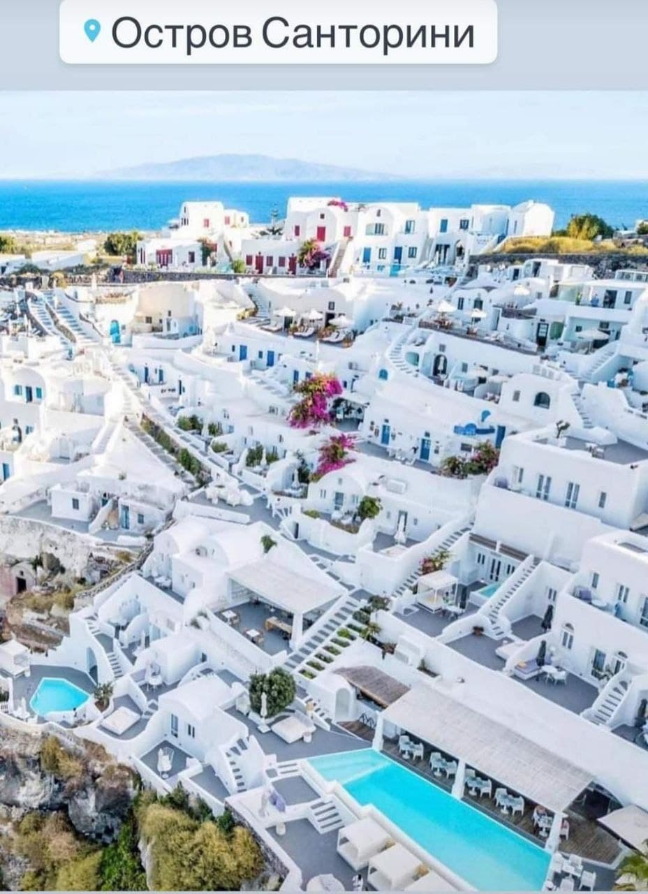
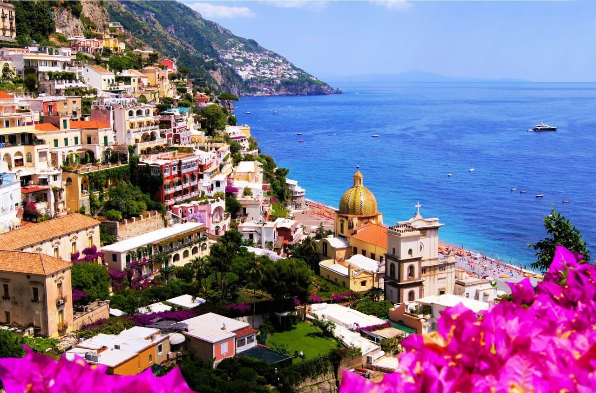

Санторіні
Острів Санторіні знаходиться в південній частині Егейського моря. Цей магічний острів з'явився в
17 столітті до н.е.
після потужного виверження вулкана, і про них ходять різні легенди і міфи. Місцеві жителі вважають його візитною
карткою Греції, деякі навіть називають острів "Грецької перлиною", а історики і філософи заявляють, що Санторіні –
це та сама "Загублена Атлантида", яка до цих пір залишається загадкою історії.

Сардінія
Назва «Сардинія», за однією з легенд, походить від грецького «сандаліотіс»: Творець, вперше ступивши на землю,
залишив відбиток своєї сандалі, на місці якого виник дивовижний острів. Його краса воістину божественна: квіткові
луки, химерні скелі, білосніжні пляжі, тихі зелені бухти, озера з рожевими фламінго, незліченні пам'ятники історії і
архітектури ... Не дивно, що острів, а точніше, його північно-східне узбережжя Коста-Смеральда ( «Смарагдовий берег
») облюбували« сильні світу цього ». У той же час Сардинія прекрасно підійде для заняття дайвінгом, серфінгом,
велоспортом, пішим туризмом - як і для спокійного пляжного відпочинку в колі сім'ї.
